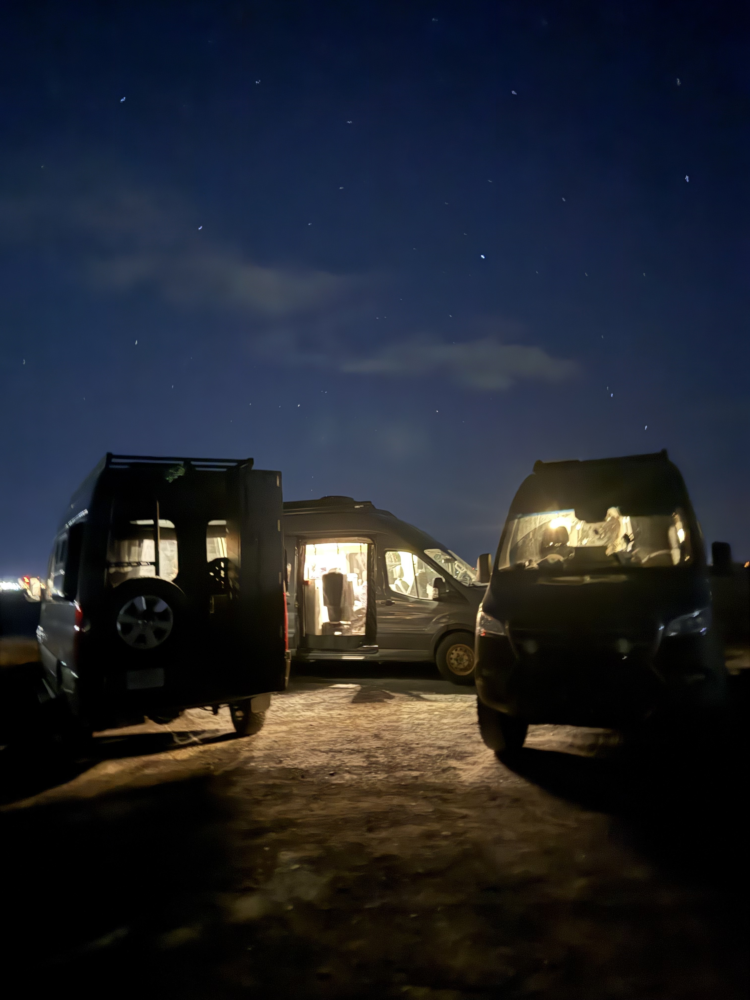

You've been out there. First campsite. First time really getting lost in a good way. First pin added to the community map. Nights under stars that made you wonder why you ever slept in a house. Vanlife accumulates these moments fast — and until now, there wasn't a place in Grover to see them reflected back at you.
That changes with the new Stats page. It's a full view of your Grover journey: your activity on the community map, your contributions to the Trophy Map, your history as a member of the community. It loads fast because it fetches everything in parallel, so by the time you navigate to it, the numbers are already there.
We built it because the data was telling a story — your story — and it deserved to be shown somewhere you could actually see it. Vanlife is a pursuit worth measuring, and the Stats page is Grover's way of honoring how far you've come.
"The Stats page is Grover's way of honoring how far you've come."
Trophies That Actually Mean Something
Alongside the stats, we've shipped a trophy system. Each trophy marks a real milestone in your vanlife journey — not arbitrary point accumulation, but things that matter: where you've been, what you've shared, and how you've contributed to the community around you.
A few of our favorites from the full catalog:
- Pioneer — Created your first pin. The one that starts everything.
- Off the Beaten Path — Created your first dispersed camping pin. For the ones who go where the roads end.
- Going Places — Completed your first bucket list pin. Dream it. Do it. Trophy earned.
- Trailsetter — Another user saved one of your pins to their bucket list. You put a place on someone's map.
- Cairn Magnet — Received 10 cairns across your pins. The community is stacking rocks on your behalf.
- Trail Blazer — Created 10 pins. You're building something.
- Bucket Crusher — Completed 10 bucket list pins. The bucket is losing.
- Legend — Created 500 pins. We'll leave this one here.
Trophies show up in your Stats view as you earn them. They're not hidden behind paywalls or subscription tiers — they're just yours, as you go. The trophy icon in the app is the kind of thing you want to check after a big trip, because there's a real chance something new is waiting for you.
Trophies are earned, not purchased. Every one of them reflects something you actually did on the road — a place shared, a bucket list item crossed off, a spot that inspired someone else to make plans.
We were thoughtful about deduplication too — if you earn the same milestone through slightly different paths, it shows up once, cleanly. The trophy shelf stays meaningful rather than cluttered.
Member Since: A Nod to Your History
One small detail in the Stats page that we're proud of: the "Member Since" field shows you the year you joined the Grover community. It's a small thing, but it's meaningful — especially for the users who have been with us since the early days.
As the community grows and Grover keeps getting better, knowing when your journey started becomes part of the story. It's a quiet acknowledgment of the trust you placed in us early on, and we think that deserves to be surfaced somewhere you can see it.
How to Find Your Stats
The Stats button lives in the shortcuts bar in the app — it's one tap from your main view. We put it there intentionally because we want Stats to be something you check naturally, not something you have to hunt for in a settings menu.
Open it after a trip. Open it before planning the next one. Share it with someone who's considering vanlife and wants to see what a few months of exploring can look like. However you use it, the Stats page is yours.
If you haven't started building your Grover story yet, the best time is right now. Your first pin, your first chat with your agent, your first night in a spot you found through the community map — those are the moments the Stats page is waiting to celebrate. Check out our guide on adding your first pin if you want to start earning those trophies today.
We're just getting started with what the Stats page can show. As Grover grows, so will the ways we reflect your journey back to you. For now, go check your stats — and if you're not happy with the numbers, the road is right there waiting. Need some help planning what's next? Your Grover agent is ready to help you chart the next chapter.
Start Building Your Vanlife Story
Download Grover, get out there, and let the Stats page keep track of how far you've roamed.